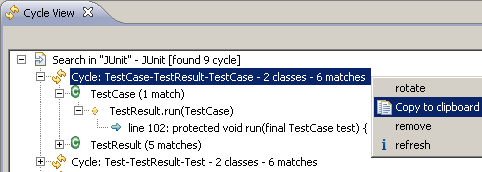
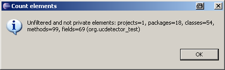

Right click on classes, packages or projects, Select context menu: "UCDetector/detect cycles".
The class cycles will appear in the Cycle View. Browse the class cycles by exploring the
cycle tree.

Count code checked by UCDetector
It is possible to count code checked by UCDetector. Select context menu: "UCDetector/count elements"

Clean markers
Delete UCDetector markers by right clicking on a java element which contains
the markers and select:
"UCDetector/Clean markers"